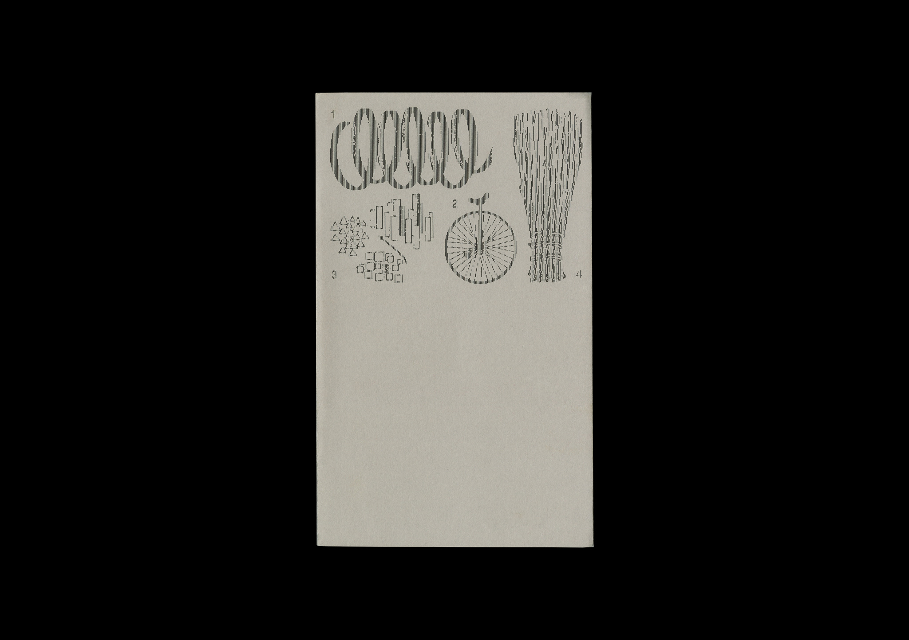
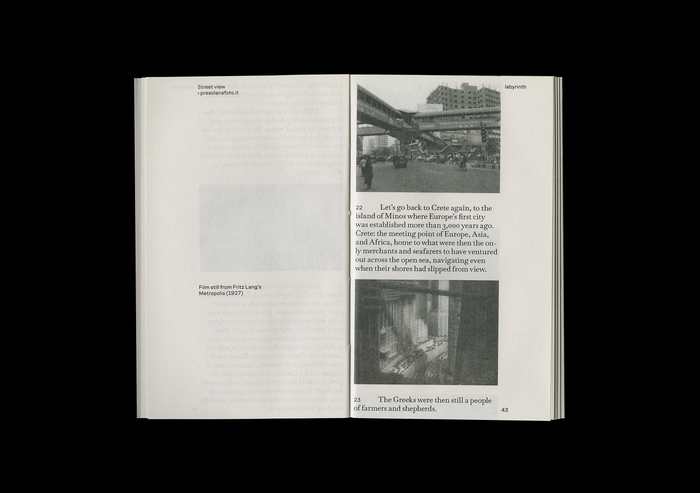
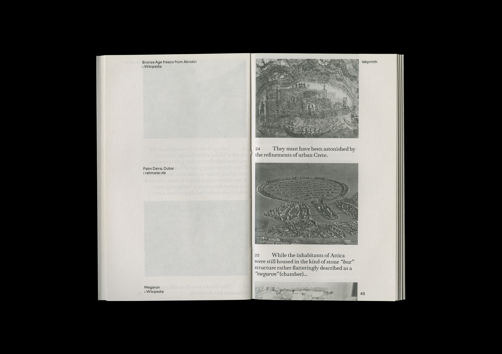
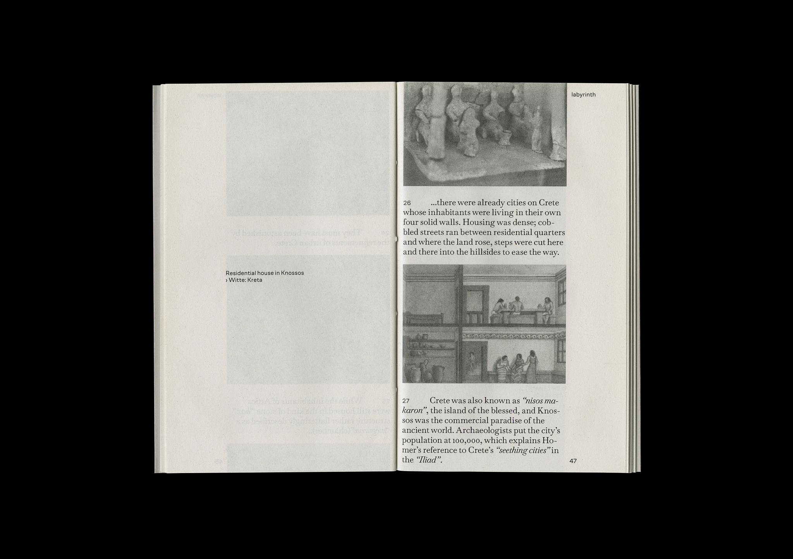
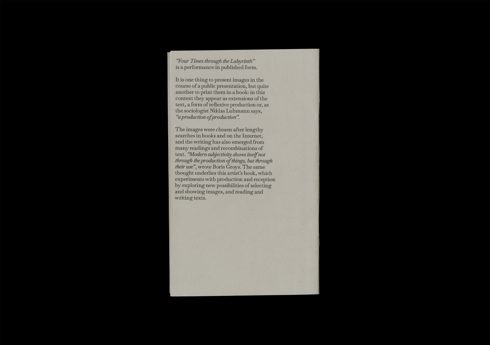
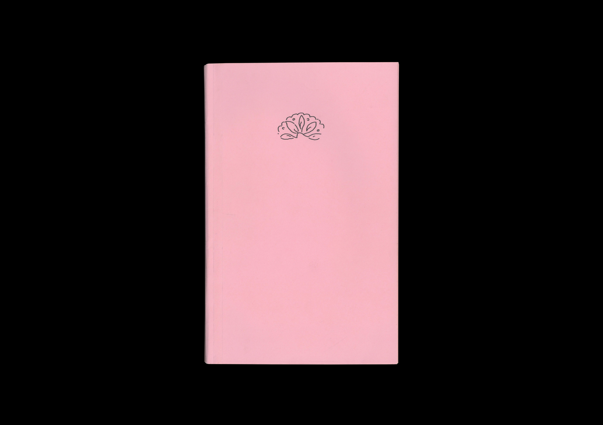
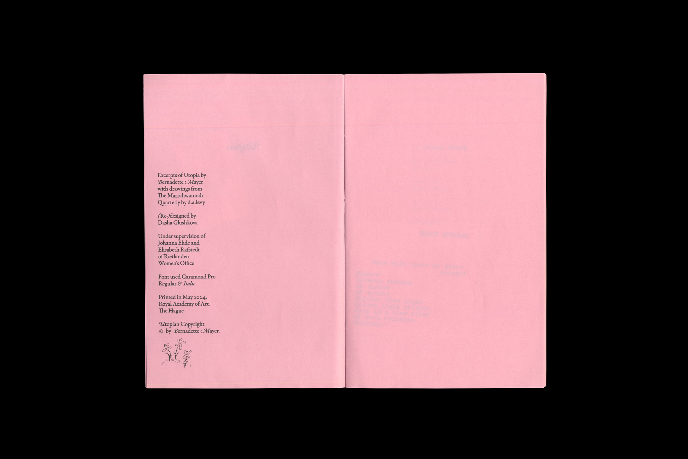
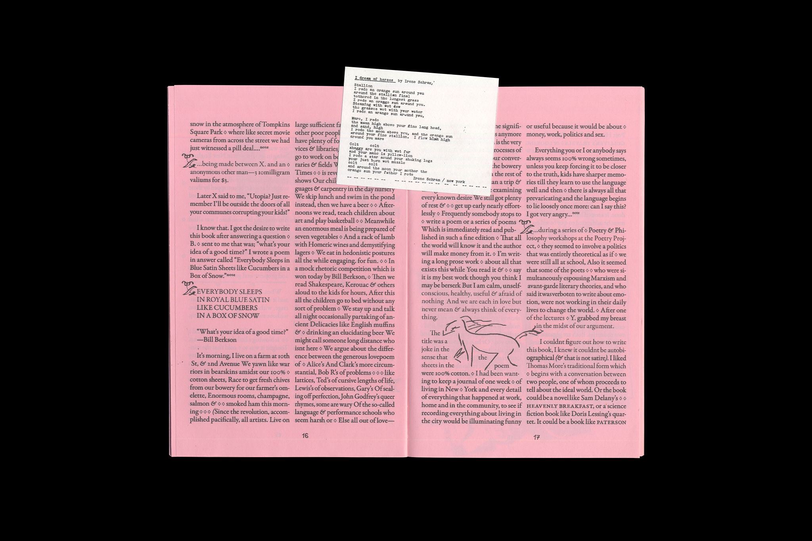
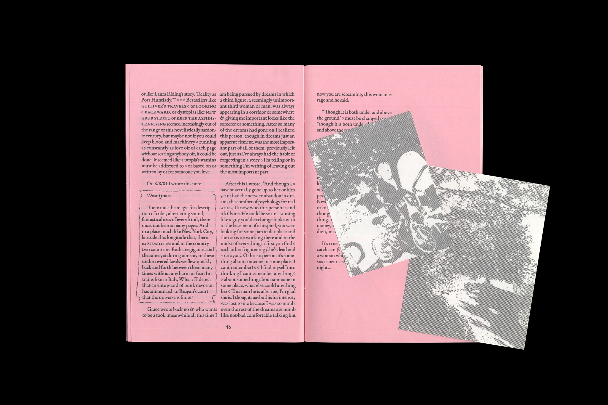

-
Rewire Reflections Zine, 2025
Created in collaboration with: Teun Hanselman; Puck Pruim;
Alexandra Vitko; Pyotr Golub and Nina Meljac -
Playdate is a student-led series of peer-to-peer workshops that I co-host with Alexandra Vitko at the Royal Academy of Art (KABK). Born out of a desire to explore what’s missing from the traditional curriculum, Playdate creates space for interdisciplinary exchange, hands-on learning, and informal critical discussion. Every two weeks, we invite fellow students to lead workshops in their own fields of interest – from ceramics and sound editing to set design and publishing – offering an open, collaborative format for skill-sharing and community building.


-
The beach, October 2024
-
"Rest is The Softest Form of Resistance" is a collaborative research project with Alexandra Vitko exploring rest as a form of resistance to capitalism-driven exhaustion. We approach the topic through our personal experiences—one too anxious to sleep, the other too drained to wake up—expressed through both writing and materials: cold, rigid metal versus soft, inviting wool. The outcome is a curated shelf of texts—essays, poems, and reflections by ourselves and others—paired with handcrafted objects made in response to the readings.
-
Website on Local Publishing, November 2024
(Mobile version to be added)
-
A redesign of Four Times Through the Labyrinth by Jan Wenzel and Olaf Nicolai – a transcript of four lectures originally held in Leipzig in 2010.
This version reimagines the book as a scrollable PDF, drawing from the visual language of digital presentations. The design translates that experience into print: images and text are arranged in continuous vertical columns, guiding the reader through the content in a clear, linear flow.     -
Redesign of Bernadette Mayer's "Utopia"
    -
Collective poster for "Dancing or soft or conversing" exhibition
-
Book based on my website // Write description

-
Glass Pieces animation experiment, June 2024
-
May 2024

-
Newspaper design for the Open Day at Royal Academy of Art,
The Hague, 2023. In collaboration with: Benaiah French; Cliff Vonk; Marie Filatova


-
Animation for an imaginary event "Stereo Doc Film Festival", April 2023
-
Beach walk